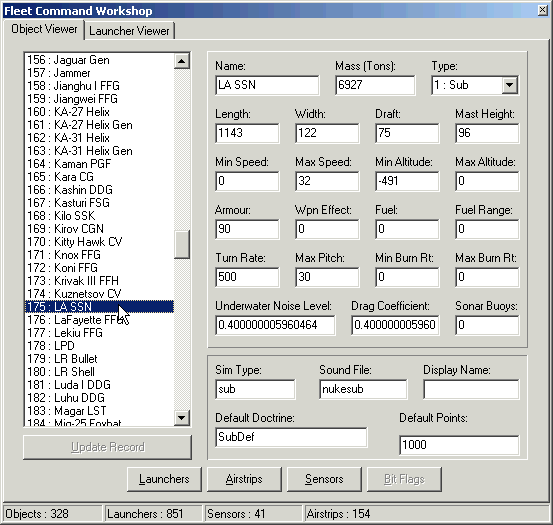
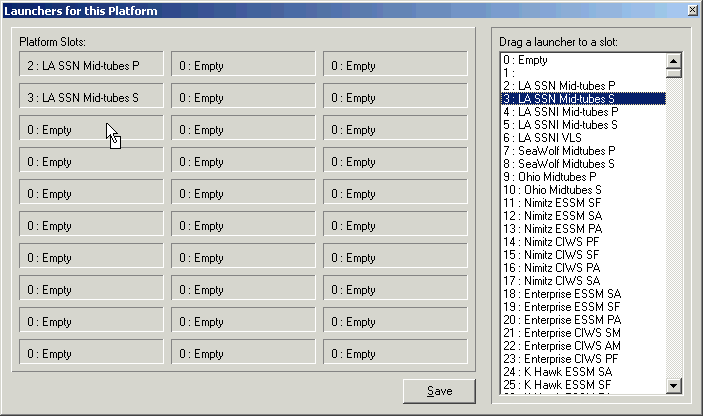
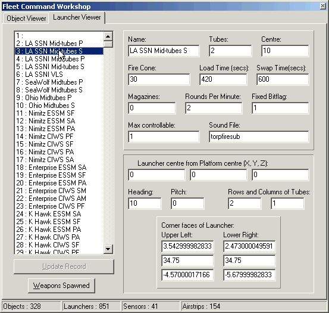
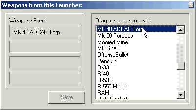

|
|
I stopped developing this after Sonalysts released their first major Fleet Command patch. That patch fixed so many aspects of the game that riled so many people on the newsgroups and message boards (me included).
If you do want it drop me a line. If the response is great enough, I might start developing it again. It was pretty unique because it had a totally drag and drop interface at a time when most other FC editors were DOS based <shudder>
Here's some screenies for you to ogle:

The snapshot above shows the default 'object' display. Here we've pulled up the data on the Los Angeles class submarine.

This snapshot shows the available weapon launchers for the chosen platform (the LA class sub, as above). We're being naughty and equipping the submarine with another set of starboard torpedo tubes.

The figure above shows us editing a launcher - imagine how cool it'd be in the future to position the launcher on a proper 3d model of the platform you were editing. That would be tres cool...

Finally we are looking at which weapons are fired by the LA SSN Mid-tubes. We could be silly here and make it fire Offensive (underwater) Bullets, but that might be taking the proverbial a little too much :)
So if you still think a proggy like this would be useful to the FC community, drop me a line at paulyg@clara.net. I don't think I've got the source for it any more, but it shouldn't be too difficult to knock up again...
Website and content by Paul Groves. Best viewed at 800x600.